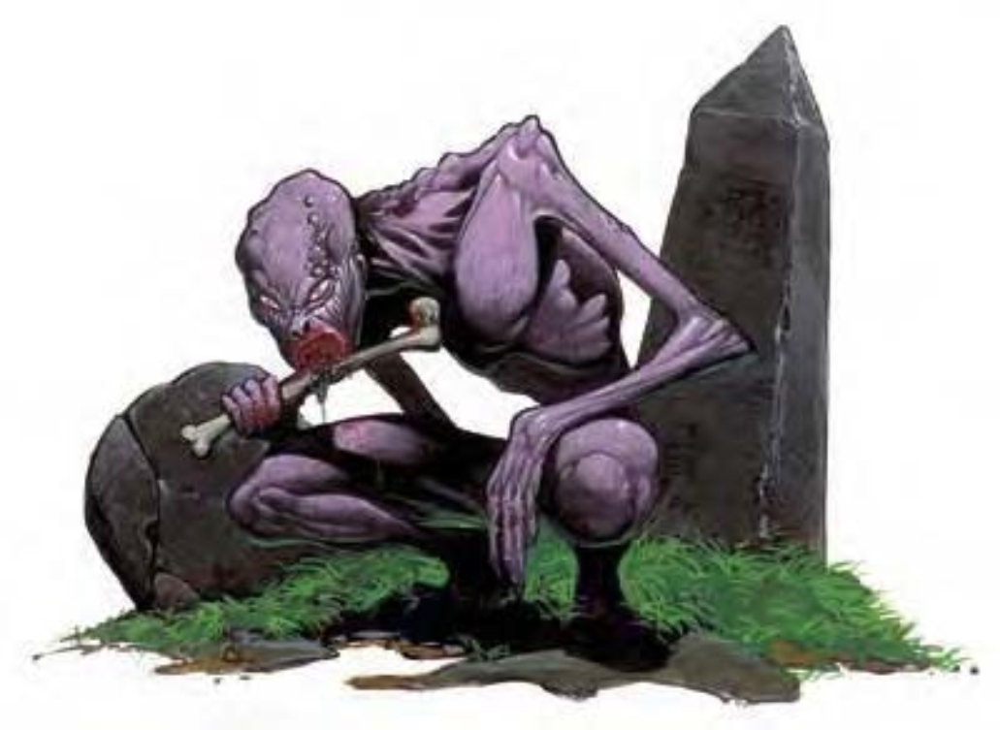

食尸鬼的外型看来还有点像人类，但散发着一股臭气，而且肌肤长满斑点，干瘪瘪地贴在身上，骨骼的形状清楚可见。食尸鬼全身上下几乎没有一根毛发，牙齿像肉食性动物一样又长又尖，双眼像烧红的煤球，嵌在凹陷的眼框中。
食尸鬼嗜食腐肉，所以最常在墓地、战场或其他类似的地方出没。只要死尸味道充斥所在，就一定可以看见这种恐怖生物，随时准备吞噬没留意的猎物。
传说中，爱吃人肉的的男人或女人死亡之后就会化为食尸鬼。虽然真假有待考据，但这种说法至少解释了食尸鬼嗜食人类死尸的恶心行径。也有人相信食尸鬼生前其实是过度纵欲或坏心眼的人，在死亡过程中，心智严重扭曲，变成这种如比野阴兀狡的邪恶生物。
食尸鬼通晓的语言和生前相同 (通常是通用语)。
战斗食尸鬼的战斗方式偏好突袭，会从墓碑后或低浅的墓穴中突然跳出攻击敌人。
食尸鬼毒 (超自然)：食尸鬼的啮咬会传染食尸鬼毒，强韧检定DC=12，潜伏期1天，造成1d3体质以及1d3敏捷伤害。豁免检定DC的调整值与魅力调整值相同。
死于食尸鬼毒的人形生物会在下一次午夜复活成为食尸鬼，他们并不具有任何生前能力，也不受其他食尸鬼的控制，但却非常爱吃活物的肉，就像其他食尸鬼一样。若该人形生物的生命骰为4以上，则会复活为妖鬼，而非食尸鬼。
麻痹 (特异)：任何被食尸鬼的啮咬或爪抓攻击击中的生物，都必须通过强韧检定 (DC=12)，否则会麻痹1d4+1轮。精灵对此能力免疫。豁免检定DC的调整值与魅力调整值相同。
食尸水鬼是属于水生亚种的食尸鬼分支，他们会在隐藏的暗礁或其他船只容易沉没的地区活动。基本行走速度30英尺，游泳速度30英尺，只出没于水域环境。
妖鬼 (Ghast)虽然外形类似食尸鬼，但却更狡猾而危险。
战斗 (妖鬼)：
食尸鬼毒 (超自然)：妖鬼的啮咬会传染食尸鬼毒，强韧检定DC=15，潜伏期1天，造成1d3体质以及1d3敏捷伤害。豁免检定DC的调整值与魅力调整值相同。
麻痹 (特异)：任何被妖鬼的啮咬或爪抓攻击击中的生物，都必须通过强韧检定 (DC=15)，否则会麻痹1d4+1轮。即使精灵都无法幸免。豁免检定DC的调整值与魅力调整值相同。
恶臭 (特异)：萦绕在妖鬼周身的死亡与腐烂臭气令人感到恶心，10英尺范围内的任何活物都必须通过强韧检定 (DC=15)，否则会陷入生病状态1d6+4分钟。通过豁免检定的生物在24小时内不会再受到同一个妖鬼的恶臭影响。“减缓毒性”或“中和毒性”法术可以移除生病状态。对毒素免疫的生物不受此能力影响，对毒素具有抗力的生物在豁免检定时能够获得正常加值。豁免检定DC的调整值与魅力调整值相同。
| 资料栏位 | 食尸鬼 | 妖鬼 |
|---|---|---|
| 生命骰 | 2d12 (13HP) | 4d12+3 (29HP) |
| 先攻 | +2 | +3 |
| 速度 | 30英尺 (6格) | 30英尺 (6格) |
| 防御等级 | 14 (+2敏捷、+2天生)、接触12、措手不及12 | 17 (+3敏捷、+4天生)、接触12、措手不及14 |
| 基本攻击/擒抱 | +1 / +2 | +2 / +5 |
| 攻击 | 啮咬+2近战 (1d6+1附加麻痹) | 啮咬+5近战 (1d8+3附加麻痹) |
| 全力攻击 | 啮咬+2近战 (1d6+1附加麻痹) 及 2爪抓+0近战 (1d3附加麻痹) | 啮咬+5近战 (1d8+3附加麻痹) 及 2爪抓+3近战 (1d4+1附加麻痹) |
| 占据/触及 | 5英尺 / 5英尺 | 5英尺 / 5英尺 |
| 特殊攻击 | 食尸鬼毒、麻痹 | 食尸鬼毒、麻痹、散发恶臭 |
| 特殊能力 | 黑暗视觉60英尺、不死特性、+2驱散抗力 | 黑暗视觉60英尺、不死特性、+2驱散抗力 |
| 豁免 | 强韧+0、反射+2、意志+5 | 强韧+1、反射+4、意志+6 |
| 属性 | 力量13、敏捷15、体质―、智力13、感知14、魅力12 | 力量17、敏捷17、体质―、智力13、感知14、魅力16 |
| 技能 | 平衡感+6、攀爬+5、躲藏+6、跳跃+5、潜行+6、侦察+7 | 平衡感+7、攀爬+9、躲藏+8、跳跃+9、潜行+8、侦察+8 |
| 专长 | 多重攻击 | 多重攻击、健壮 |
| 环境 | 任何 (食尸水鬼：任何水域) | 任何 |
| 组织 | 单独、成队 (2-4) 或一批 (7-12) | 单独、成队 (2-4) 或一批 (2-4，加上7-12个食尸鬼) |
| 挑战级数 | 1 | 3 |
| 宝藏 | 无 | 标准 |
| 阵营 | 总是混乱邪恶 | 总是混乱邪恶 |
| 进化 | 3HD (中型) | 5-8HD (中型) |
| 等级修正值 | ― | ― |